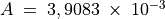
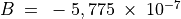
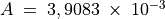
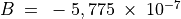

താപനില PT100 സെൻസർ ഉപയോഗിച്ച്¶
ചില വസ്തുക്കളുടെ വൈദ്യുത പ്രതിരോധം അതിന്റെ താപനിലയുമായി ബന്ധപ്പെട്ടിരിക്കുന്നു. ഈ ബന്ധം ഒരു ബാഹ്യ താപനില അളക്കാൻ വേണ്ടി ഉപയോഗിക്കാം.വ്യാവസായിക ആപ്ലിക്കേഷനുകളിലെ ഏറ്റവും സാധാരണമായ, താപനില സെൻസറുകളാണ് RTD (റെസിസ്റ്റൻസ് ടെമ്പറേച്ചർ ഡിറ്റക്ടറുകൾ). അവ നല്ല സ്ഥിരതയും ആവർത്തനക്ഷമതയുമുള്ളവയാണ്. പ്ലാറ്റിനം, നിക്കൽ അല്ലെങ്കിൽ ചെമ്പ് എന്നിവ ഉപയോഗിച്ച് നിർമ്മിച്ച ഒരു വയർ RTD യായി ഉപയോഗിക്കാം. PT100 വ്യാവസായികാടിസ്ഥാനത്തിൽ ഉപയോഗത്തിലുള്ള ഒരു പ്ലാറ്റിനം RTD യാണ്. പൂജ്യം ഡിഗ്രി സെൽഷ്യസിൽ ഇതിന്റെ പ്രതിരോധം 100 ഓം ആണ്. ഇതിന്റെ പ്രതിരോധവും താപനിലയും തമ്മിലുള്ള ബന്ധം
 എന്നതാണ്.
 and . PT100 ഉപയോഗിച്ച് തണുത്തുകൊണ്ടിരിക്കുന്ന വെള്ളത്തിന്റെ താപനില സമയത്തിനനുസരിച്ച് മാറുന്നത്തിന്റെ ഗ്രാഫ് വരക്കുകയാണ് ഈ പരീക്ഷണത്തിന്റെ ഉദ്ദേശം.
എന്നതാണ്.
 and . PT100 ഉപയോഗിച്ച് തണുത്തുകൊണ്ടിരിക്കുന്ന വെള്ളത്തിന്റെ താപനില സമയത്തിനനുസരിച്ച് മാറുന്നത്തിന്റെ ഗ്രാഫ് വരക്കുകയാണ് ഈ പരീക്ഷണത്തിന്റെ ഉദ്ദേശം.

- PT100നെ CCSൽ നിന്നും ഗ്രൗണ്ടിലേക്ക് ഘടിപ്പിക്കുക.
- A3യെ CCSലേക്ക് ഘടിപ്പിക്കുക
- ഗെയിൻ സെറ്റിങ് റെസിസ്റ്റർ Rg 1000ഓം ഘടിപ്പിക്കുക
- സ്റ്റാർട്ട് ബട്ടൺ അമർത്തുക

ഈ പരീക്ഷണത്തിൽ താപനില കൃത്യമായി ലഭിക്കണമെങ്കിൽ താഴെപ്പറയുന്ന ഘടകങ്ങൾ പരിഗണിക്കേണ്ടതുണ്ട്. - കറന്റ് സോഴ്സ് 1.1mA യിൽ നിന്നും വ്യത്യാസപ്പെട്ടിരിക്കാം. യാഥാർത്ഥമൂല്യം അളന്ന് GUIൽ നൽകണം. - A3യുടെ അകത്തുള്ള ആംപ്ലിഫയറിന്റെ ഗെയിൻ , ഓഫ്സെറ്റ് എന്നിവയും പ്രത്യേകം അളന്ന് GUIൽ രേഖപ്പെടുത്താം. - ഉരുകുന്ന ഐസ് പോലെ അറിയാവുന്ന താപനിലയുള്ള എന്തെങ്കിലും ഉപയോഗിച്ച് ഉപകരണത്തിന്റെ സൂക്ഷ്മത ഉറപ്പുവരുത്തണം.